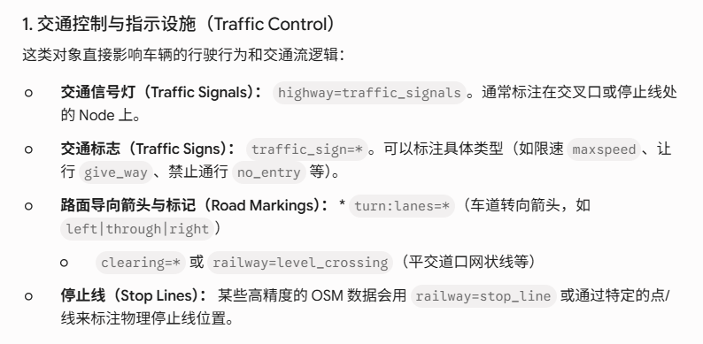

基于自动驾驶与高精地图需求的 OSM 标签分类速查。

traffic_sign=*, highway=stop/give_wayhighway=traffic_signalshighway=street_lamp, barrier=guard_railbarrier=kerb, traffic_calming=*highway=crossing/bus_stop, railway=level_crossing工程中用于 OpenDRIVE/Lanelet2 转换的核心提取对象。
自动驾驶地图开发中最常提取的 OSM 属性：
highway, traffic_sign, traffic_signalscrossing, barrier, kerbtraffic_calming, railway, public_transportamenity, road_marking